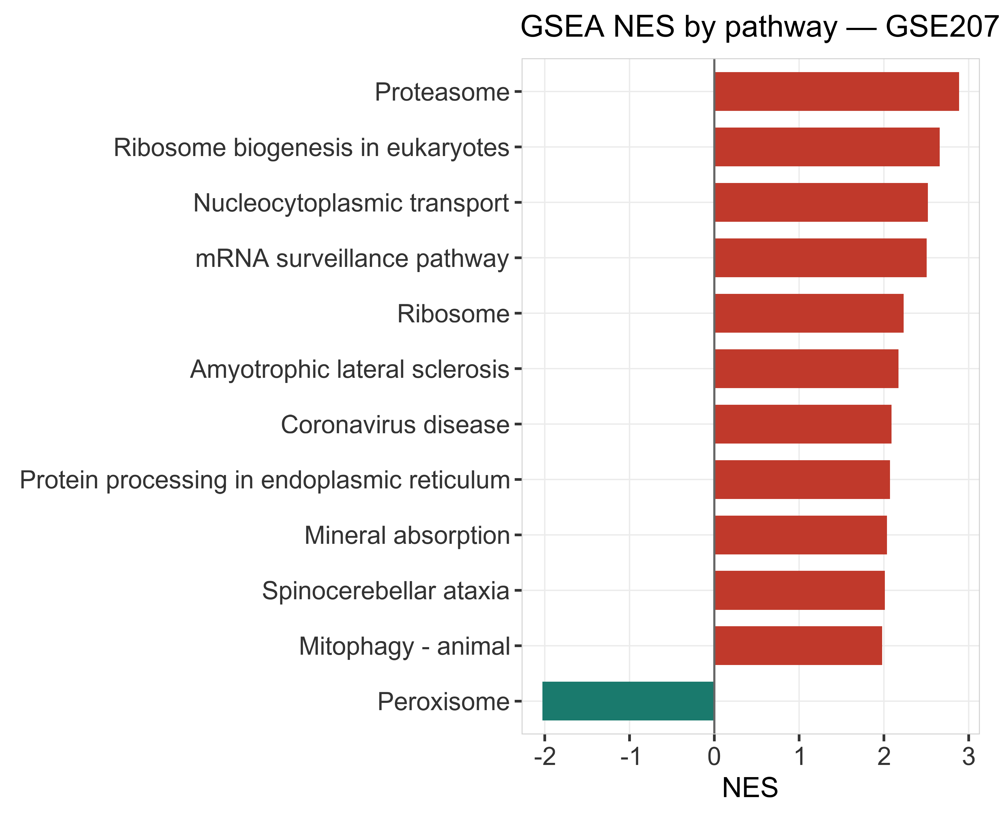
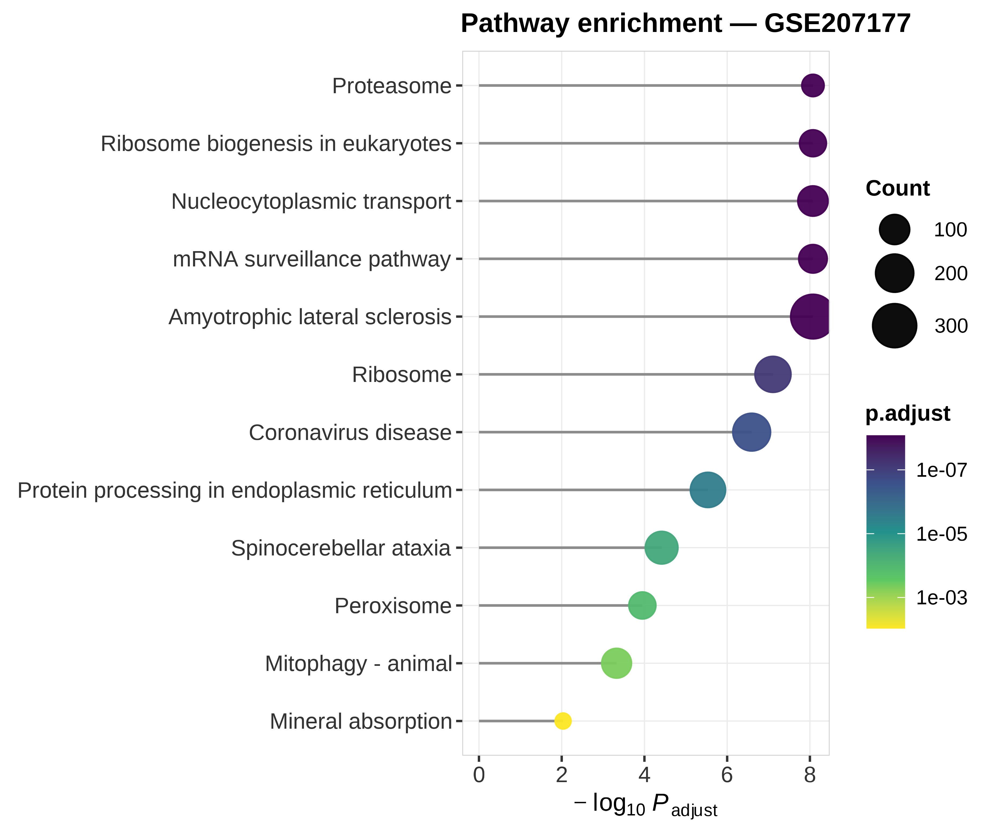
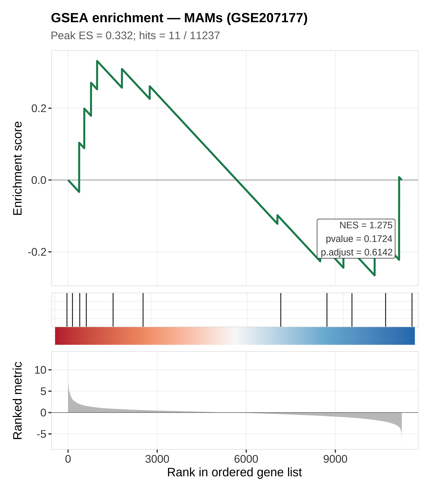
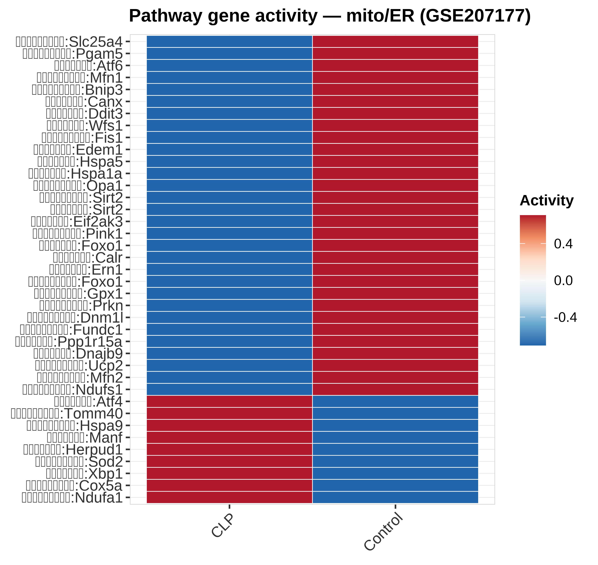

状态：PASS
已 source 本技能 脚本_scripts/: 运行骨架_runSkeleton.R | REAL GSE207177 via cache; SHUQING_ROOT=E:/RProject/书清项目
data_provenance: REAL — accession GSE207177（书清项目）。
缓存表见 数据文件/real_GSE207177_*.csv；完整树 SHUQING_ROOT=E:/RProject/书清项目。
详见 数据文件/DATA_SOURCE.md / PROVENANCE.md。
"skill","stage","n_rows","n_cols","n_samples","group_source","toy","data_provenance","accession","sourced_skill_scripts","notes","checked_at" "GSEA-Pathway","post",11237,4,NA,"GSE207177 macrophage DEG + KEGG GSEA",FALSE,"REAL",NA,"已 source 本技能 脚本_scripts/: 运行骨架_runSkeleton.R | REAL GSE207177 via cache; SHUQING_ROOT=E:/RProject/书清项目","GSEA NES + classic ES + pathway gene heatmap; data_provenance=REAL","2026-07-19 20:10:12"




REAL GSE207177：期刊 Fig3-C 棒棒糖 + Fig2/3 GSEA（绿 ES + 红蓝 rank bar + 嵌字统计） + mito/ER 通路基因热图。data_provenance=REAL。
生成时间：2026-07-19 20:10:15 · 报告规范：统一交付规范_DeliveryStandards · 版本 v1